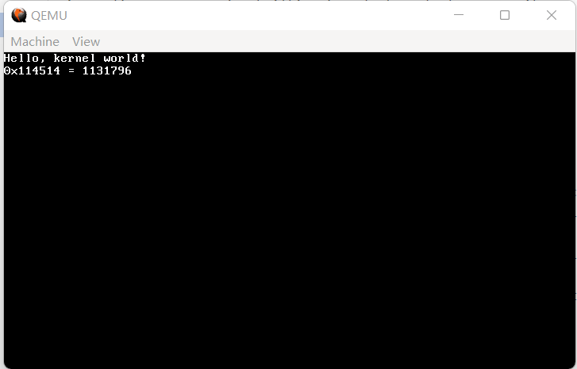

07 实现我们自己的打印函数
经过了六节不长不短的征程，我们总算是来到了内核之中。
首先，我们要让 kernel 获取很多东西的控制权，比如 gdt，比如 esp。这一部分肯定是要用到汇编的，但主体已经是 C。
因此，我们要把 kernel 更改一下：
代码 7-1 内核改版（kernel.asm）
[section .bss]
; 这里，为栈准备空间
StackSpace resb 2 * 1024 ; 2KB的栈，大概够用？
StackTop: ; 栈顶位置
[section .text]
extern kernel_main ; kernel_main是C部分的主函数
global _start ; 真正的入口点
_start:
mov esp, StackTop ; 先把栈移动过来
cli ; 以防万一，再关闭一次中断（前面进保护模式已经关闭过一次）
call kernel_main ; 进入kernel_main
jmp $ ; 从kernel_main回来了（一般不会发生），悬停
然后呢？然后告诉大家一个好消息，我们可以开始用C啦！（鼓掌）但是坏消息是，这里的C不能用标准库（因为某些原因），所以我们只能自力更生了。
所以，我们应当先把基础设施搭建起来，在这里我指的是基本的整数类型。虽然整数类型可以直接用，但 unsigned int 之流毕竟还是太长了。
所以，新建 common.h，我们要开始定义了。
代码 7-2 基础设施（common.h）
#ifndef COMMON_H
#define COMMON_H
typedef unsigned int uint32_t;
typedef int int32_t;
typedef unsigned short uint16_t;
typedef short int16_t;
typedef unsigned char uint8_t;
typedef char int8_t;
typedef int8_t bool;
#define true 1
#define false 0
void outb(uint16_t port, uint8_t value);
void outw(uint16_t port, uint16_t value);
uint8_t inb(uint16_t port);
uint16_t inw(uint16_t port);
#define NULL ((void *) 0)
#endif
这里除了定义了整数类型、布尔类型和 NULL 外，还有四个 I/O 端口操作函数。正如我们在平常写app时一样，新建 common.c，我们来添加实现：
代码 7-3 端口操作（common.c）
#include "common.h"
void outb(uint16_t port, uint8_t value)
{
asm volatile("outb %1, %0" : : "dN"(port), "a"(value)); // 相当于 out value, port
}
void outw(uint16_t port, uint16_t value)
{
asm volatile("outw %1, %0" : : "dN"(port), "a"(value)); // 相当于 out value, port
}
uint8_t inb(uint16_t port)
{
uint8_t ret;
asm volatile("inb %1, %0" : "=a"(ret) : "dN"(port)); // 相当于 in val, port; return val;
return ret;
}
uint16_t inw(uint16_t port)
{
uint16_t ret;
asm volatile("inw %1, %0" : "=a"(ret) : "dN"(port)); // 相当于 in val, port; return val;
return ret;
}
怎么样，看上去很不好懂是不是？这玩意叫做内联汇编，这么复杂的用法只此一次，后面哪怕用也不会这么复杂了。至于它具体的用法，可自行百度，在此略过不提。
（说白了其实就是我也看不懂这坨史，只好把它们抄下来）
虽然它们定义起来很麻烦，但用还是很好用的，我们很快就会看到。
接下来，看看本节的标题，我们继续向着实现打印函数的目标前进。
代码 7-4 打印函数头文件（monitor.h）
#ifndef _MONITOR_H_
#define _MONITOR_H_
#include "common.h"
void monitor_put(char c); // 打印字符
void monitor_clear(); // 清屏
void monitor_write(char *s); // 打印字符串
void monitor_write_hex(uint32_t hex); // 打印十六进制数
void monitor_write_dec(uint32_t dec); // 打印十进制数
#endif
从名字和注释上看，应该还是挺好懂的吧。这里同时提供十六进制打印和十进制打印，十六进制对于地址等情况十分便利，而对于我们这些用惯了十进制的人而言，打印十进制会更有亲和力。
接下来，我们将实施“四步走”战略，逐步完成打印函数的实现。
第一步：移动光标
我们之前操作光标，用的都是 int 10h。现在进入了保护模式，int 10h 不能用了，怎么办？
换一个角度来想，光标是在显示器上跳动的，所以显示器必然有调整光标的方法。猜对啦，我们正是要操纵显卡来移动光标。
新建 monitor.c，加入如下定义：
代码 7-5 基本定义与光标移动（monitor.c）
#include "monitor.h"
static uint16_t cursor_x = 0, cursor_y = 0; // 光标位置
static uint16_t *video_memory = (uint16_t *) 0xB8000; // 一个字符占两个字节（字符本体+字符属性，即颜色等），因此用uint16_t
static void move_cursor() // 根据当前光标位置（cursor_x，cursor_y）移动光标
{
uint16_t cursorLocation = cursor_y * 80 + cursor_x; // 当前光标位置
outb(0x3D4, 14); // 光标高8位
outb(0x3D5, cursorLocation >> 8); // 写入
outb(0x3D4, 15); // 光标低8位
outb(0x3D5, cursorLocation); // 写入，由于value声明的是uint8_t，因此会自动截断
}
这样，只要调用 move_cursor，显示器就会自动把光标移到 (cursor_x, cursor_y) 处。
第二步：滚屏操作
在平常用shell的时候，当光标到了最后一行，我们还要按enter，那么shell内部的文字将自动滚动。这个过程我们称为滚屏。
显然，如果我们自己的OS在打印时也能自动滚屏就好了。其实，实现滚屏并不太难：
代码 7-6 滚屏（monitor.c）
// 文本控制台共80列，25行（纵列竖行），因此当y坐标不低于25时就要滚屏了
static void scroll() // 滚屏
{
uint8_t attributeByte = (0 << 4) | (15 & 0x0F); // 黑底白字
uint16_t blank = 0x20 | (attributeByte << 8); // 0x20 -> 空格这个字，attributeByte << 8 -> 属性位
if (cursor_y >= 25) // 控制台共25行，超过即滚屏
{
int i;
for (i = 0 * 80; i < 24 * 80; i++) video_memory[i] = video_memory[i + 80]; // 前24行用下一行覆盖
for (i = 24 * 80; i < 25 * 80; i++) video_memory[i] = blank; // 第25行用空格覆盖
cursor_y = 24; // 光标设置回24行
}
}
这样，只要调用 scroll，显示器就会自动判断是否需要滚屏；如果需要滚屏，则立即执行滚屏，但这一过程并不会重新设置光标位置。
第三步：打印单个字符、打印字符串、清屏
打印字符串无非是不断重复打印单个字符的过程，因此这一步的重点还是在打印字符上。
打印字符本身并不难，难的是随之而来的各种判断，比如对各种转义字符的处理，对不可见字符（也就是在ASCII里，但我们根本看不见的字，比如换行其实是一个单独的字符，但我们看不见，只能看见渲染时候分行了）的处理，等等。
总之，下面就是打印单个字符的函数。
代码 7-7 打印单个字符（monitor.c）
void monitor_put(char c) // 打印字符
{
uint8_t backColor = 0, foreColor = 15; // 背景：黑，前景：白
uint8_t attributeByte = (backColor << 4) | (foreColor & 0x0f); // 黑底白字
uint16_t attribute = attributeByte << 8; // 高8位为字符属性位
uint16_t *location; // 写入位置
// 接下来对字符种类做各种各样的判断
if (c == 0x08 && cursor_x) // 退格，且光标不在某行开始处
{
cursor_x--; // 直接把光标向后移一格
}
else if (c == 0x09) // 制表符
{
cursor_x = (cursor_x + 8) & ~(8 - 1); // 把光标后移至8的倍数为止
// 这一段代码实际上的意思是：先把cursor_x + 8，然后把这一个数值变为小于它的最大的8的倍数（位运算的魅力，具体的可以在纸上推推）
}
else if (c == '\r') // CR
{
cursor_x = 0; // 光标回首
}
else if (c == '\n') // LF
{
cursor_x = 0; // 光标回首
cursor_y++; // 下一行
}
else if (c >= ' ' && c <= '~') // 可打印字符
{
location = video_memory + (cursor_y * 80 + cursor_x); // 当前光标处就是写入字符位置
*location = c | attribute; // 低8位：字符本体，高8位：属性，黑底白字
cursor_x++; // 光标后移
}
if (cursor_x >= 80) // 总共80列，到行尾必须换行
{
cursor_x = 0;
cursor_y++;
}
scroll(); // 滚屏，如果需要的话
move_cursor(); // 移动光标
}
location = video_memory + (cursor_y * 80 + cursor_x); // 当前光标处就是写入字符位置
*location = c | attribute; // 低8位：字符本体，高8位：属性，黑底白字
接下来便是打印字符串，它不过是对打印字符的简单重复：
代码 7-8 打印字符串（monitor.c）
void monitor_write(char *s)
{
for (; *s; s++) monitor_put(*s); // 遍历字符串直到结尾，输出每一个字符
}
这一步还剩下最后一个任务，实现清屏。说白了，清屏不过就是把全屏都打印上空格，然后把光标放到左上角而已。
代码 7-9 清屏（monitor.c）
void monitor_clear()
{
uint8_t attributeByte = (0 << 4) | (15 & 0x0F); // 黑底白字
uint16_t blank = 0x20 | (attributeByte << 8); // 0x20 -> 空格这个字，attributeByte << 8 -> 属性位
for (int i = 0; i < 80 * 25; i++) video_memory[i] = blank; // 全部打印为空格
cursor_x = 0;
cursor_y = 0;
move_cursor(); // 光标置于左上角
}
至此，最基本的打印函数已经成型。其实这里已经可以测试了，但还有两个函数，我们总不能放着不管。
第四步：输出整数
这一步我们要更进一步，在基础打印函数的基础上实现十六进制和十进制数的输出。我们从易到难，从十进制数开始。
OIer 基本都知道，在OI中，有一套东西，叫做快读快写。而现在，没有 cout，没有 printf，还想输出十进制数，快写正好可以胜任。
在这里，我们使用最简单的一版快写——递归版，它的代码并不长，仅有三行：
代码 7-10 十进制数打印（monitor.c）
void monitor_write_dec(uint32_t dec)
{
int upper = dec / 10, rest = dec % 10;
if (upper) monitor_write_dec(upper);
monitor_put(rest + '0');
}
还是挺好懂的吧，先输出高位，再把最后一位输出出来。
十六进制相比十进制要难上一点，因为我们希望在输出十六进制的时候有一个 0x 前缀，这样就不能直接用递归了（不过硬要用递归也可以，写起来肯定比循环短）。
代码 7-11 十六进制打印（monitor.c）
void monitor_write_hex(uint32_t hex)
{
char buf[20]; // 32位最多0xffffffff，20个都多了
char *p = buf; // 用于写入的指针
char ch; // 当前十六进制字符
int i, flag = 0; // i -> 循环变量，flag -> 前导0是否结束
*p++ = '0';
*p++ = 'x'; // 先存一个0x
if (hex == 0) *p++ = '0'; // 如果是0，直接0x0结束
else {
for (i = 28; i >= 0; i -= 4) { // 每次4位，0xF = 0b1111
ch = (hex >> i) & 0xF; // 0~9, A~F
// 28的原因是多留一点后路（
if (flag || ch > 0) { // 跳过前导0
flag = 1; // 没有前导0就把flag设为1，这样后面再有0也不会忽略
ch += '0'; // 0~9 => '0'~'9'
if (ch > '9') {
ch += 7; // 'A' - '9' = 7
}
*p++ = ch; // 写入
}
}
}
*p = '\0'; // 结束符
monitor_write(buf);
}
最后的最后，自然是功能测试。新建 main.c，如此这般：
#include "monitor.h"
void kernel_main() // kernel.asm会跳转到这里
{
monitor_clear(); // 先清屏
monitor_write("Hello, kernel world!\n");
// 验证write_hex和write_dec，由于没有printf，这一步十分烦人
monitor_write_hex(0x114514);
monitor_write(" = ");
monitor_write_dec(0x114514);
monitor_write("\n");
// 悬停
while (1);
}
虽然前面我们一直在写C，但是忽略了一个问题，那就是怎么编译的问题。如果操作正确，在第0节您应该下载了i686-elf-tools（或者linux的gcc），如此这般编译：
i686-elf-gcc -c -O0 -fno-builtin -fno-stack-protector -o monitor.o monitor.c
这是编译 monitor.c 的示例。现在总的编译命令太长了，总共有这么多：
nasm boot.asm -o boot.bin
nasm loader.asm -o loader.bin
i686-elf-gcc -c -O0 -fno-builtin -fno-stack-protector -o monitor.o monitor.c
i686-elf-gcc -c -O0 -fno-builtin -fno-stack-protector -o common.o common.c
i686-elf-gcc -c -O0 -fno-builtin -fno-stack-protector -o main.o main.c
nasm -f elf -o kernel.o kernel.asm
i686-elf-ld -s -Ttext 0x100000 -o kernel.bin kernel.o common.o monitor.o main.o
edimg imgin:a.img copy from:loader.bin to:@: copy from:kernel.bin to:@: imgout:a.img
qemu-system-i386 -fda a.img
不过在此之前，我们还是要看看我们成果如何。把上面的那坨命令粘贴到命令行，QEMU 窗口应如下图：

（图 7-1 运行结果）
好，成功运行！